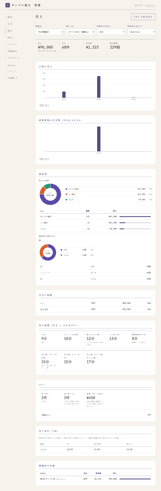
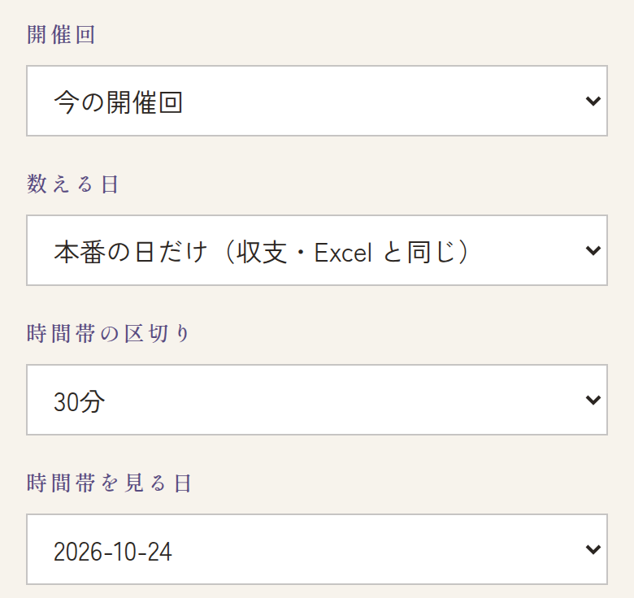
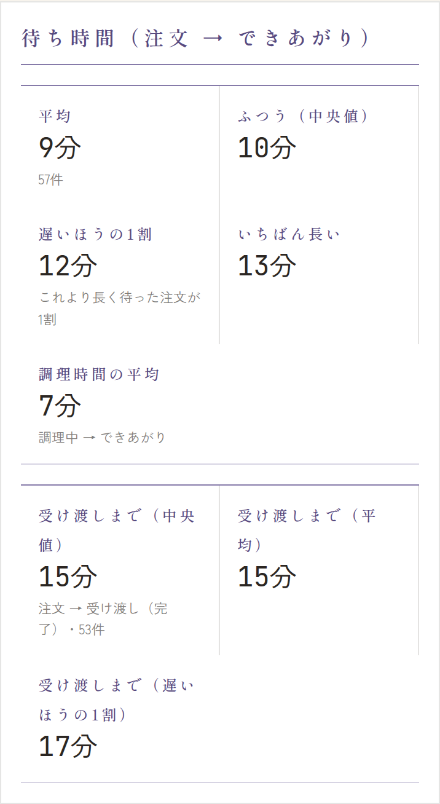
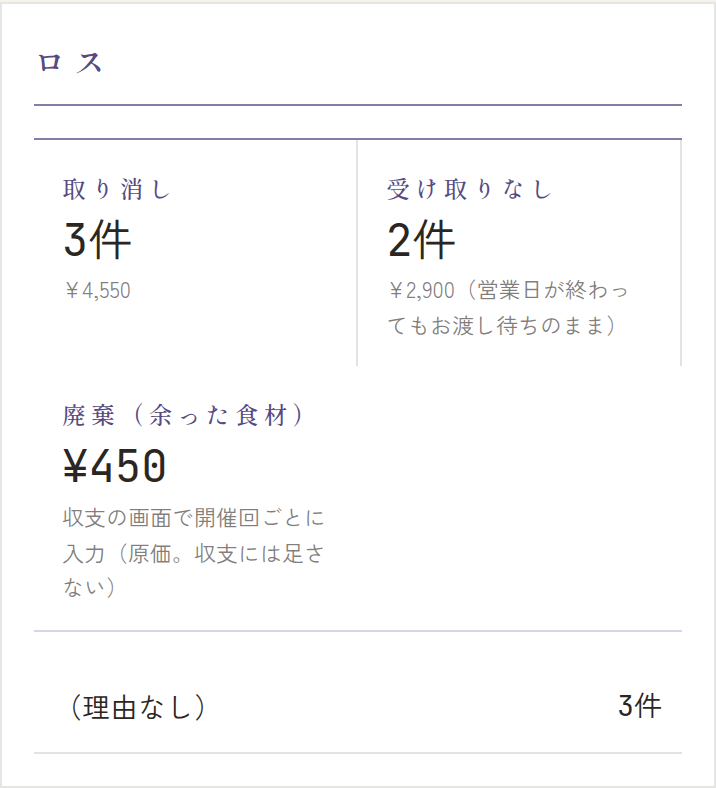
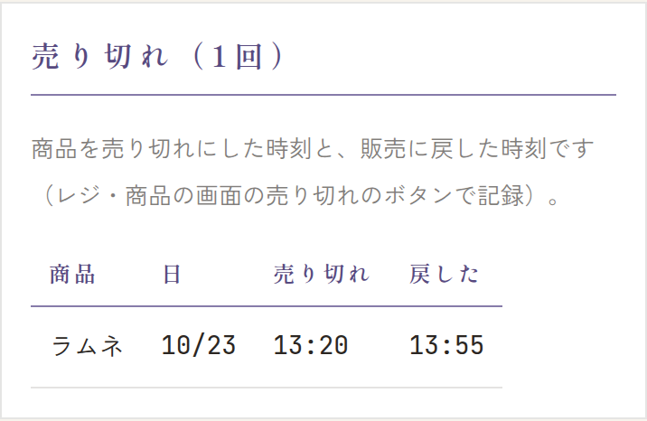

メニューの 売上 を開きます。上の1行の条件（開催回・数える日・時間帯の区切り・時間帯を見る日）が、その下のすべての表とグラフに効きます。


いつも見るところ
- 売上・注文・客単価・販売個数: 支払い済みの注文だけを数えます（取り消し・受け取りなしは数えません）。
- 日別の売上・時間帯別の注文数・商品別: どの日・どの時間に、何が売れたか。選択肢（麺・トッピングなど）の選ばれ方も見られます。
- 注文の経路: レジと Web 注文の割合。
- 開催回の比較: これまでの開催との比較。
- CSV を書き出す: 右上のボタンで、注文の明細を CSV（Excel で開けるファイル）で保存できます。
数える日を切り替える


- すべての日（練習も）: 開催のすべての日の注文を数えます（最初はこちら）。
- 本番の日だけ（収支・Excel と同じ）: 本番の開催回の日の注文だけを数えます。収支の画面や学校に出す書類の売上と同じ数字になります。
提供時間（待ち時間）


- 平均・ふつう（中央値）・遅いほうの1割・いちばん長い: 注文からできあがりまでの時間です。「遅いほうの1割」は、これより長く待った注文が1割ある、という時間です。
- 調理時間の平均: 調理中からできあがりまで。
- 受け渡しまで: 注文から、お渡し済み（完了）を押すまでの時間です。お客さんが受け取るまでにかかった時間の目安になります。
ロス（取り消し・受け取りなし・廃棄）


- 取り消し・受け取りなし: 件数と金額。
- 廃棄（余った食材）: 収支の画面で開催回ごとに入れた金額の合計です（入れ方は → 収支の画面の「廃棄」）。買ったときの値段で、収支には足しません（支出はもう入っているため）。
売り切れの記録


レジや商品の画面で売り切れにした時刻と、販売に戻した時刻が自動で残ります。戻していなければ「売り切れのまま」と出ます。次の日に作る量を決めるときの参考にしてください。